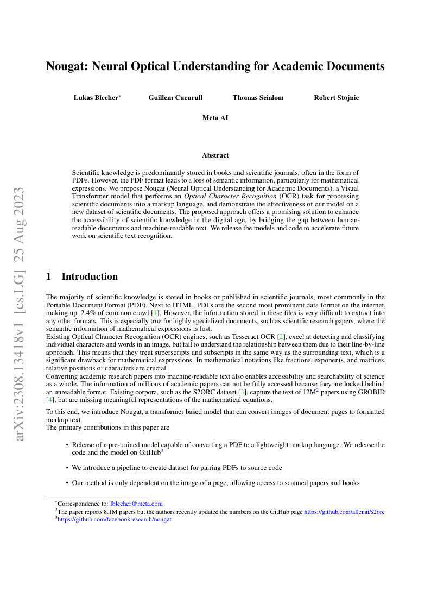

1 Nougat to read scientific PDFs
- Copied from here
2 TL-DR
Nougat is a Visual Transformer model designed to enhance accessibility of scientific knowledge in the digital age. It converts scientific documents from PDFs into a markup language, improving understanding, especially for mathematical expressions. The model’s effectiveness has been demonstrated on a new dataset of scientific documents. This innovation bridges the gap between human-readable and machine-readable text. The authors have shared their models and code to accelerate future research in scientific text recognition.
This is just notebook, to show how to use it.
- TODO
- Write some more about the paper.
- Add nbdev library to work with it, so that just entering name of the pdf is needed from user hand and then it will be automatically converted.
- Create pip install documentation for it
2.1 Jupter notebook is the following
from transformers import AutoProcessor, VisionEncoderDecoderModel
import torch
from pathlib import Path
from typing import Optional, List, Dict, Tuple
import io
import fitz
from huggingface_hub import hf_hub_download
from PIL import Image
from collections import defaultdict
from transformers import StoppingCriteria, StoppingCriteriaListprocessor = AutoProcessor.from_pretrained("facebook/nougat-small")
model = VisionEncoderDecoderModel.from_pretrained("facebook/nougat-small")Downloading (…)rocessor_config.json: 0%| | 0.00/479 [00:00<?, ?B/s]
Downloading (…)okenizer_config.json: 0%| | 0.00/4.49k [00:00<?, ?B/s]
Downloading (…)/main/tokenizer.json: 0%| | 0.00/2.14M [00:00<?, ?B/s]
Downloading (…)cial_tokens_map.json: 0%| | 0.00/96.0 [00:00<?, ?B/s]
Special tokens have been added in the vocabulary, make sure the associated word embeddings are fine-tuned or trained.
Downloading (…)lve/main/config.json: 0%| | 0.00/4.77k [00:00<?, ?B/s]
Downloading pytorch_model.bin: 0%| | 0.00/990M [00:00<?, ?B/s]
Downloading (…)neration_config.json: 0%| | 0.00/165 [00:00<?, ?B/s]filepath = hf_hub_download(repo_id="ysharma/nougat", filename="input/nougat.pdf", repo_type="space")Downloading nougat.pdf: 0%| | 0.00/4.13M [00:00<?, ?B/s]def rasterize_paper(
pdf: Path,
outpath: Optional[Path] = None,
dpi: int = 96,
return_pil=False,
pages=None,
) -> Optional[List[io.BytesIO]]:
"""
Rasterize a PDF file to PNG images.
Args:
pdf (Path): The path to the PDF file.
outpath (Optional[Path], optional): The output directory. If None, the PIL images will be returned instead. Defaults to None.
dpi (int, optional): The output DPI. Defaults to 96.
return_pil (bool, optional): Whether to return the PIL images instead of writing them to disk. Defaults to False.
pages (Optional[List[int]], optional): The pages to rasterize. If None, all pages will be rasterized. Defaults to None.
Returns:
Optional[List[io.BytesIO]]: The PIL images if `return_pil` is True, otherwise None.
"""
pillow_images = []
if outpath is None:
return_pil = True
try:
if isinstance(pdf, (str, Path)):
pdf = fitz.open(pdf)
if pages is None:
pages = range(len(pdf))
for i in pages:
page_bytes: bytes = pdf[i].get_pixmap(dpi=dpi).pil_tobytes(format="PNG")
if return_pil:
pillow_images.append(io.BytesIO(page_bytes))
else:
with (outpath / ("%02d.png" % (i + 1))).open("wb") as f:
f.write(page_bytes)
except Exception:
pass
if return_pil:
return pillow_images17
# prepare image for the model
pixel_values = processor(images=image, return_tensors="pt").pixel_values
print(pixel_values.shape)
torch.Size([1, 3, 896, 672])class RunningVarTorch:
def __init__(self, L=15, norm=False):
self.values = None
self.L = L
self.norm = norm
def push(self, x: torch.Tensor):
assert x.dim() == 1
if self.values is None:
self.values = x[:, None]
elif self.values.shape[1] < self.L:
self.values = torch.cat((self.values, x[:, None]), 1)
else:
self.values = torch.cat((self.values[:, 1:], x[:, None]), 1)
def variance(self):
if self.values is None:
return
if self.norm:
return torch.var(self.values, 1) / self.values.shape[1]
else:
return torch.var(self.values, 1)class StoppingCriteriaScores(StoppingCriteria):
def __init__(self, threshold: float = 0.015, window_size: int = 200):
super().__init__()
self.threshold = threshold
self.vars = RunningVarTorch(norm=True)
self.varvars = RunningVarTorch(L=window_size)
self.stop_inds = defaultdict(int)
self.stopped = defaultdict(bool)
self.size = 0
self.window_size = window_size
@torch.no_grad()
def __call__(self, input_ids: torch.LongTensor, scores: torch.FloatTensor):
last_scores = scores[-1]
self.vars.push(last_scores.max(1)[0].float().cpu())
self.varvars.push(self.vars.variance())
self.size += 1
if self.size < self.window_size:
return False
varvar = self.varvars.variance()
for b in range(len(last_scores)):
if varvar[b] < self.threshold:
if self.stop_inds[b] > 0 and not self.stopped[b]:
self.stopped[b] = self.stop_inds[b] >= self.size
else:
self.stop_inds[b] = int(
min(max(self.size, 1) * 1.15 + 150 + self.window_size, 4095)
)
else:
self.stop_inds[b] = 0
self.stopped[b] = False
return all(self.stopped.values()) and len(self.stopped) > 0
# autoregressively generate tokens, with custom stopping criteria (as defined by the Nougat authors)
outputs = model.generate(pixel_values.to(device),
min_length=1,
max_length=3584,
bad_words_ids=[[processor.tokenizer.unk_token_id]],
return_dict_in_generate=True,
output_scores=True,
stopping_criteria=StoppingCriteriaList([StoppingCriteriaScores()]),
)generated = processor.batch_decode(outputs[0], skip_special_tokens=True)[0]
generated = processor.post_process_generation(generated, fix_markdown=False)
print(generated)# Nougat: Neural Optical Understanding for Academic Documents
Lukas Blecher
Correspondence to: lblecher@meta.com
Guillem Cucurull
Thomas Scialom
Robert Stojnic
Meta AI
The paper reports 8.1M papers but the authors recently updated the numbers on the GitHub page https://github.com/allenai/s2orc
###### Abstract
Scientific knowledge is predominantly stored in books and scientific journals, often in the form of PDFs. However, the PDF format leads to a loss of semantic information, particularly for mathematical expressions. We propose Nougat (**N**eural **O**ptical **U**nderstanding for **A**cademic Documents), a Visual Transformer model that performs an _Optical Character Recognition_ (OCR) task for processing scientific documents into a markup language, and demonstrate the effectiveness of our model on a new dataset of scientific documents. The proposed approach offers a promising solution to enhance the accessibility of scientific knowledge in the digital age, by bridging the gap between human-readable documents and machine-readable text. We release the models and code to accelerate future work on scientific text recognition.
## 1 Introduction
The majority of scientific knowledge is stored in books or published in scientific journals, most commonly in the Portable Document Format (PDF). Next to HTML, PDFs are the second most prominent data format on the internet, making up 2.4% of common crawl [1]. However, the information stored in these files is very difficult to extract into any other formats. This is especially true for highly specialized documents, such as scientific research papers, where the semantic information of mathematical expressions is lost.
Existing Optical Character Recognition (OCR) engines, such as Tesseract OCR [2], excel at detecting and classifying individual characters and words in an image, but fail to understand the relationship between them due to their line-by-line approach. This means that they treat superscripts and subscripts in the same way as the surrounding text, which is a significant drawback for mathematical expressions. In mathematical notations like fractions, exponents, and matrices, relative positions of characters are crucial.
Converting academic research papers into machine-readable text also enables accessibility and searchability of science as a whole. The information of millions of academic papers can not be fully accessed because they are locked behind an unreadable format. Existing corpora, such as the S2ORC dataset [3], capture the text of 12M2 papers using GROBID [4], but are missing meaningful representations of the mathematical equations.
Footnote 2: The paper reports 8.1M papers but the authors recently updated the numbers on the GitHub page https://github.com/allenai/s2orc
To this end, we introduce Nougat, a transformer based model that can convert images of document pages to formatted markup text.
The primary contributions in this paper are
* Release of a pre-trained model capable of converting a PDF to a lightweight markup language. We release the code and the model on GitHub3 Footnote 3: https://github.com/facebookresearch/nougat
* We introduce a pipeline to create dataset for pairing PDFs to source code
* Our method is only dependent on the image of a page, allowing access to scanned papers and books
No matching items
Reuse
CC BY-NC-SA 4.0
Citation
BibTeX citation:
@online{goni2023,
author = {Goni, Hasan},
title = {How to {Use} {Nougat} to {Read} {Scientific} {Paper}},
date = {2023-10-21},
url = {https://hasangoni.quarto.pub/hasan-blog-post/posts/nougat-to-read-scientific-pdf-files},
langid = {en}
}
For attribution, please cite this work as:
Goni, Hasan. 2023. “How to Use Nougat to Read Scientific
Paper.” October 21, 2023. https://hasangoni.quarto.pub/hasan-blog-post/posts/nougat-to-read-scientific-pdf-files.